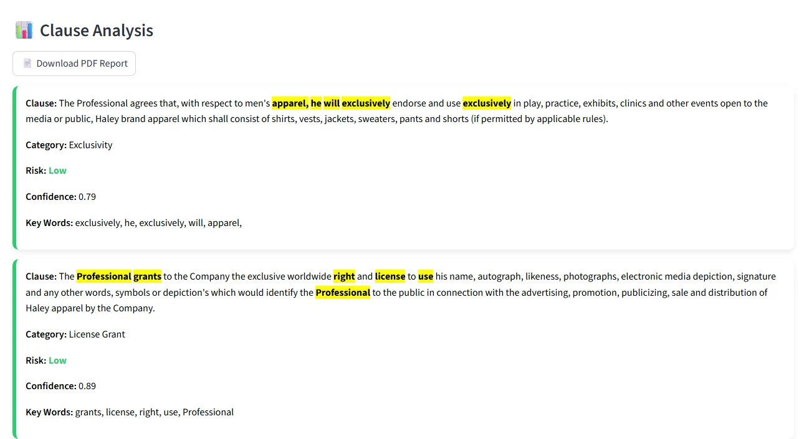

Legal Contract Auditor
FEATURED · LIVEReads a contract, splits it into clauses and classifies each one into 19 clause types with a fine-tuned LegalBERT model, then flags risky wording and shows which words drove each prediction.
88.4%
accuracy on held-out contracts
0.864
macro F1 (baseline 0.811)
76
test contracts never seen in training
- Built a dataset of 9,149 clauses from the lawyer annotations in CUAD (510 commercial contracts), plus an "Other" class so the model can read whole contracts.
- Split the data by contract and removed text duplicated across splits, so the test score reflects contracts the model has never seen.
- Fine-tuned
legal-bert-base-uncasedon a Kaggle GPU; a TF-IDF + logistic regression baseline scores 81.8%. - My first version claimed 96.8%, but its labels came from keyword rules that alone scored 95.8%. I rebuilt the labels from the real annotations and documented why.

Confusion matrix on the test contracts. The main mix-ups are Anti-Assignment with Change of Control, and Exclusivity with Non-Compete.